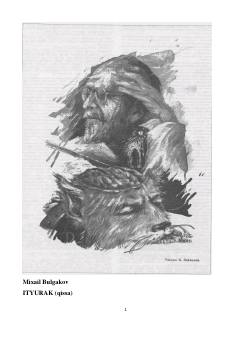

IProfessor Preobrajenskiyning it ustida o'tkazgan g'ayritabiiy tajribasi haqidagi o'tkir satirik qissa.
Mixail Bulgakovning ushbu mashhur qissasi professor Preobrajenskiyning it miyasini inson miyasiga almashtirib, tajriba o'tkazishi haqida hikoya qiladi. Asar inqilobdan keyingi jamiyatdagi ijtimoiy illatlarni o'tkir satira va fantastik motivlar orqali fosh etadi.